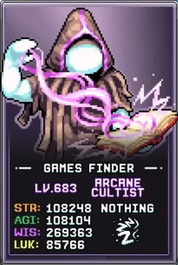
Arcanist Form / 데미지 빌드
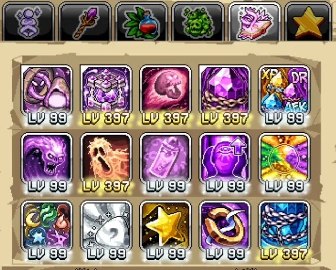
이 데미지 탤런트 빌드는 Arcanist Form에서 캐릭터 레벨 획득과 Cranium Cooking 파밍에 사용됩니다. 타키온(Tachyon) 획득을 최대화하고 더 높은 월드에서 Arcanist Form으로 진행하는 것이 우선순위입니다.
두 번째 바에 Arcanist Form을 두는 간단한 공격 바 설정을 사용하고, Shaman 및 Bubonic Conjuror 탤런트를 각각 최대화하세요. 이 탤런트 바 설정은 Arcanist Form 외부에서의 Cranium Cooking(CC) 파밍에도 합리적으로 효과적이므로 연금술 진행을 위해 바를 자주 리셋할 필요가 없습니다.
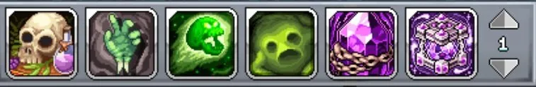
모든 Arcane Cultist(AC) 탤런트가 유용한 유틸리티나 Arcanist Form에 도움이 되므로, 클래스를 잠금 해제한 후 모든 탤런트에 1포인트씩 투자해 탤런트 레벨 보너스를 활성화한 다음 아래 핵심 탤런트에 투자하세요:
| 탤런트 | 효과 | 설명 |
|---|---|---|
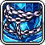 Backup Energy |
타키온 획득 증가 및 크리스탈 충전에 필요한 처치 수 감소 | Tesseract 업그레이드에 투자하기 위한 주요 타키온 획득 원천입니다. 비전 크리스탈(Arcane Crystal)을 충전하는 데 필요한 처치 수 감소도 맵 진행에 도움을 줍니다. |
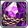 Arcane Crystals |
충전 시 비전 몹을 소환하는 비전 크리스탈 생성 | 새 맵을 잠금 해제하는 핵심 메커니즘으로, 플레이어는 이 특별한 비전 몹들을 소환하고 일정 수를 처치해야 진행할 수 있습니다. 소환되는 몹 수를 늘려 더 적은 크리스탈 트리거로 다음 맵 요구 사항을 달성할 수 있습니다. |
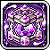 Tesseract |
Arcanist Form 및 계정 전체 부스트를 위한 Tesseract 업그레이드 시스템 열기. 또한 타키온 획득 향상 | Tesseract 업그레이드 시스템을 통한 진행을 위한 또 다른 타키온 획득 원천입니다. |
 Arcane Skulls Arcane Skulls |
Sizzling Skulls를 비전 데미지로 전환(비전 몹 처치 가능)하고 기본 공격마다 시전 추가 | 비전 몹을 처치하기 위한 초기 비전 데미지 원천입니다. 추가 레벨로 얻는 시간이 귀중한 이유는 일반 몹들의 맵 클리어에도 매우 효과적이기 때문입니다. |
| Ghoulish Power | Tesseract 업그레이드 100개당 Arcanist Accuracy(명중률) 및 방어 증가 | Accuracy는 더 높은 타키온 획득을 위한 더 높은 맵 진행의 주요 장벽이므로 이것이 중요하며, Tesseract 업그레이드와 함께 성장합니다. |
| Labotomizer | 연구소 레벨에 따라 Arcanist 치명타 확률 증가 | 더 높은 맵에서의 치명타 데미지를 높이며, 연구소 레벨과 함께 스케일링됩니다. |
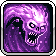 Ghastly Power |
Tesseract 업그레이드 100개당 Arcanist 데미지 및 공격 속도 증가 | Arcanist Form을 위한 또 다른 데미지 원천이지만, 이 시점부터 추가 데미지가 목표에 필요하지 않을 수도 있습니다. 대신 Prismo Prisma에 추가 탤런트 포인트 투자를 고려하세요. |
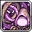 Arcanist Form |
Arcanist Form 진입/종료 및 Arcanist 데미지 증가 | 탤런트로 사용 가능한 마지막 Arcanist Form 데미지 원천입니다. |
| Primo Prisma | 프리즈마 버블(Prisma bubble) 드랍 확률 증가 | 비전 몹에서 이 강력한 연금술 버블을 찾을 확률을 향상시킵니다. 각 버블을 수집할 때마다 드랍 확률이 감소하므로, 여기에 탤런트 포인트를 투자하면 증가하는 희귀도를 일부 상쇄할 수 있습니다. 마지막 우선순위입니다. |
참고: 프리즈마 드랍은 맵에서 수동으로 수집해야 하며, 잊어버리고 수집하지 않아도 미래 드랍의 희귀도가 증가하지 않으므로 수집하지 않았다고 불이익은 없습니다.
Arcanist Form 팁
다음 팁으로 Arcane Cultist를 최적화하세요:
- 마스터 클래스 잠금 해제: Arcane Cultist 마스터 클래스 잠금 해제에 어려움을 겪고 있고 이미 World 5 Wurms를 1격 처치할 데미지량이 있다면, 최대 탤런트 레벨 증가에 집중하세요. 이는 Bubonic Conjuror Raise Dead 탤런트 쿨다운을 줄이기 위한 Shaman 탤런트 Tenteyecle의 트리거 확률을 최대화하는 데 필요합니다.
- 기도 HP 스케일링: Arcanist Form에서 적의 체력이 스케일링되어 진행이 어려워지므로 HP를 % 증가시키는 기도(Midas Minded 또는 Jawbreaker)를 제거하세요.
- 비전 크리스탈 소환: Arcane Crystal은 맵에 진입할 때 자동으로 소환되지 않으므로, 진입 시 반드시 시전하는 것을 잊지 마세요. 더 어려운 맵을 진행하거나 일반적인 파밍을 위해 비전 몹에 쉽게 접근할 수 있도록 중앙 위치가 보통 이상적입니다.
- 비전 크리스탈 색상: 같은 맵에서 탤런트를 재시전하여 비전 크리스탈 색상(보라, 노랑, 파랑)을 전환하세요. 이 색상들은 해당 특정 맵에서 비전 몹을 처치하며 쌓이는 계정 전체의 영구 버프(Overwhelming Energy)를 증가시킵니다(각각 드랍률, 경험치, AFK).
- 장비 설정: Divine Chest/Pants/Scarf, Star Signs, 연구소 칩에서 사용 가능한 몬스터 리스폰을 추가하세요. 이는 Tesseract에서 Tenteycle Nostalgia 업그레이드가 충분히 쌓이기 전 초반 Arcanist Form에 도움이 됩니다.
- Tesseract 업그레이드: 초반 최선의 Tesseract 업그레이드는 Tenteycle Nostalgia, 타키온 증가(Ripple of Spacetime), Arcane Charging, 그리고 다양한 Accuracy 향상 옵션입니다.
- 필요 탤런트 포인트: Arcane Cultist는 효과적이기 위해 Bubonic Conjuror와 Arcane Cultist 탤런트에 탤런트 포인트가 많이 필요합니다. 진행에 어려움을 겪는다면 Arcanist Form 외부에서 캐릭터를 레벨 550~600까지 먼저 올리는 것이 더 나을 수 있습니다.
- Arcane Cultist 혜택: Arcane Cultist는 프리즈마 버블(연금술 보너스 2배), 추가 아케이드 황금 공, 조각상 및 황금 음식 이중 드랍 확률, 새 World 4 연구소 보석 등 여러 독특한 계정 혜택을 잠금 해제합니다.
Arcanist Form 월드 진행 가이드
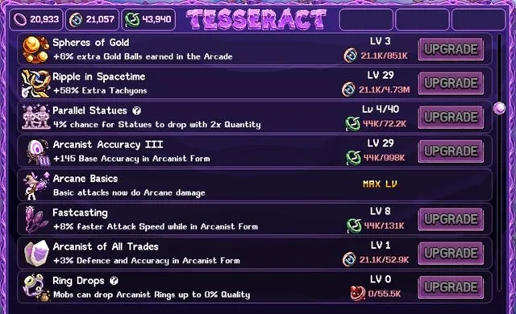
Arcanist Form의 주요 목표는 나중 월드에 도달하는 것입니다. 타키온 획득이 크게 증가하여 비싼 계정 전체 Tesseract 업그레이드를 잠금 해제할 수 있기 때문입니다.
World 1
최소 Accuracy(명중률)를 확보하고 데미지에 집중하여 각 맵을 빠르게 진행하세요. Backup Energy와 Arcane Crystals에 사용 가능한 탤런트 포인트의 영향을 받지만, 느리다면 캐릭터와 최대 탤런트 레벨을 먼저 올리세요.
World 2
World 2의 첫 번째 장벽은 Pincermin으로, 큰 맵 레이아웃에서 주어진 시간 내에 여러 비전 몹을 트리거해야 하기 때문에 어려울 수 있습니다. 10개의 비전 몹을 소환하는 레벨 350 Arcane Crystals 탤런트가 필요하므로, 요구 사항을 충족하기 위해 두 번의 충전 주기만 필요합니다.
최대 탤런트 레벨에 집중하는 것 외에도, Tentecycle 트리거 확률을 높이는 Tentecycle Nostalgia와 비전 몹 트리거에 필요한 처치 수를 줄이는 Arcane Charging을 위한 타키온 파밍에 집중하세요. 일부 Wand Drops 레벨도 더 높은 품질의 데미지 무기와 Arcanist 데미지 및 추가 타키온의 유용한 기타 보너스를 허용합니다.
Accuracy가 충분하면 SandCastles에서 타키온 1형, Pincermin과 Poop에서 타키온 2형을 파밍하세요.
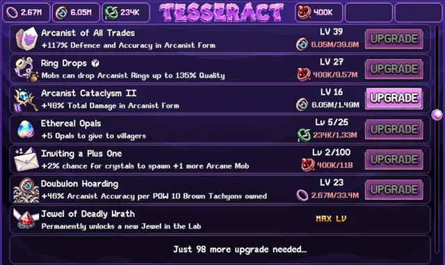
Pincermin 맵을 통과한 후 Tysons와 Moonmoon(결국에는 Snelbie)에서 각 타키온 유형을 파밍하여 World 2를 완료하고 World 3 진입을 위한 Tesseract 업그레이드를 구축하세요.
World 3
World 3은 Accuracy(명중률)와 최대 탤런트 요구 사항이 크게 증가하면서 Arcanist Form 진행이 크게 느려집니다.
이 월드를 진행하려면 쿨다운 감소 효과를 3초에서 4초로 늘리는 최소 레벨 400의 Bubonic Conjuror Tenteycle이 필요합니다. 이 수준에 도달하지 못했다면 Arcanist Form을 더 진행하는 것보다 이것이 우선순위여야 합니다.
Arcane Cultist가 사용 가능한 많은 범위 공격과 함께 다음 포탈을 잠금 해제하기 위한 대략적인 기준치는 30~50%이지만, 탤런트 레벨, 데미지, 특정 맵에 따라 다릅니다.
각 타키온 유형을 파밍하는 최적 맵은 초반에는 Sheepie(이후 Mamooth), Sir Stache, Bloque입니다. 더 진행하면 Bloque를 Snowman, Thermister, Bop Box, Dedotated Ram으로 교체할 수 있습니다.
같은 우선순위 Tesseract 업그레이드가 적용됩니다: Accuracy(Arcanist of All Trades, Arcanist Accuracy, Arcanist Accuracy II), Arcanist Form 외 트리거 확률에 맞을 때까지 Tentecycle %, 그리고 World 3을 진행하기 위한 Arcane Charging.
Arcanist Form의 데미지가 뒤처지기 시작하면 Labotomizer가 100% 치명타 확률 임계값에 더 가까이 데려다줄 것이므로 연구소 레벨을 소홀히 하지 마세요.
World 3의 최종 목표는 World 4 진입을 위한 Accuracy 및 타키온 획득을 높이는 Arcanist Form 반지 드랍을 잠금 해제하는 네 번째 타키온 유형을 제공하는 Bloodbones를 잠금 해제하는 것입니다. 가능한 한 빨리 Dedotated Rams를 통과하고(최소 15~25% Accuracy), 심지어 5% Accuracy로 Bloodbones를 파밍하는 것도 이 중요한 장비 슬롯을 잠금 해제하기에 가치가 있습니다.
단, Dedotated Ram의 Accuracy 요구 사항을 충족하기는 쉽지 않습니다. 적절한 타키온 비율로 Bop Box를 파밍할 수 있을 만큼 Accuracy 업그레이드를 확보한 후에는 각 타키온 유형의 시간당 획득량을 고려해 가장 저렴한 Tesseract 업그레이드부터 균형 있게 진행하는 것을 권장합니다. 이렇게 하면 한동안 Accuracy 문제를 해결해 주는 강력한 Doubulon Hoarding 업그레이드를 잠금 해제할 수 있습니다.
World 4
World 4는 새 반지와 Doubulon Hoarding이 필요한 도구를 제공하면서 이전 월드의 높은 Accuracy 요구 사항을 계속합니다. 반지는 어떤 맵에서든 파밍할 수 있으며, 추가 타키온 획득이 있으므로 지속적으로 업그레이드를 확인하세요.
같은 Accuracy Tesseract 업그레이드 파밍이 우선순위이며, 추가 Accuracy를 위해 Ghoulish Power 탤런트를 강화하는 다른 업그레이드와 균형을 맞추세요.
잠금 해제되는 주요 파밍 맵: 타키온 1형에 Flying Worms와 Clammies, 타키온 2형에 Donut, 타키온 3형에 Gelatinous Cuboid, 타키온 4형에 Flombiege.
최고의 타키온 파밍 위치에 도달하는 데 어려움이 있다면, 위 Tesseract 업그레이드에 집중하고 모든 플랫폼에 공격 탤런트를 신중하게 배치하며 직접 Raise Dead를 스팸하여 수동으로 진행하세요. 또한 크리스탈 충전에 필요한 처치 수를 줄이기 위해 Arcane Charging에 집중해야 합니다.
World 4의 마지막 맵을 위해 Accuracy와 데미지 업그레이드를 균형 있게 맞추세요. 데미지를 위한 최선의 Tesseract 업그레이드는 치명타 관련(Arcanist Crits와 Arcanist Supercharge)과 보라 타키온 최소 1억 저장의 Singulon Hoarding입니다. Accuracy는 Arcanist of All Trades, Doubulon Hoarding(갈색 타키온 1,000만 또는 1억 보유), Ring Drops 레벨 28에서 45~50% Accuracy를 갖는 반지 업그레이드를 사용하세요.
World 5 및 6


이 월드들은 진행의 또 다른 눈에 띄는 둔화가 있으며, Arcane Cultist AFK 아이템(Arcane Rock)을 사용하고 마스터 클래스 업그레이드 할인을 위한 World 7 전설 탤런트를 활용하는 것이 중요합니다.


이전 월드들과 마찬가지로 맵을 진행하려면 제한 시간 내에 비전 몹을 처치하기에 필요한 데미지 임계값을 충족해야 합니다.
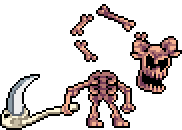

데미지의 최선 원천은 매일 업그레이드 할인을 사용하여 무기 업그레이드를 서서히 진행하고, 업그레이드를 찾을 만큼 충분한 무기를 파밍하는 것입니다.

Arcanist Form 타키온 파밍 위치
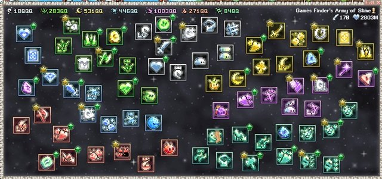
각 월드의 최적 타키온 파밍 위치입니다. 아직 해당 맵에 도달하지 못했다면 해당 타키온 유형에 대해 사용 가능한 가장 먼 맵을 사용하거나 아래에 명시된 대안을 활용하세요. 나중 월드에서는 이 특별한 비전 몹들을 빠르게 처치할 수 없다면 크리스탈을 배치하지 않는 것이 실제로 더 나을 수 있습니다.
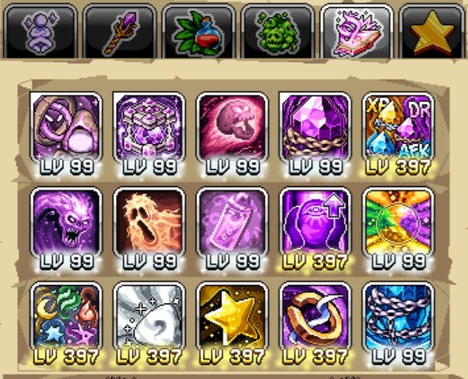
| 타키온 유형 | World 2 | World 3 | World 4 | World 5 | World 6 |
|---|---|---|---|---|---|
| Singulon/Purple | Tyson (또는 Sand Castle) | Mamooth | Clammie (또는 Flying Worm) | 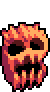 Purgatory Stalker |
Ricecake (데미지 높으면 Leek) |
| Doubulon/Brown | Snelbie (또는 W1 Poop) | 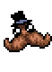 Sir Stache |
Donut | Molti (또는 Suggma) | Woodlin Spirit |
| Verdon/Green | 해당 없음 | Dedotated Ram (또는 Bop Box) | Gelatinous Cuboid | Tremor Wurm | Lantern Spirit (데미지 높으면 Skydoggie Spirit) |
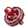 Bludon/Red |
해당 없음 | Bloodbone | Flombeige | Citringe |  Sprout Spirit (데미지 높으면 Mama Troll) Sprout Spirit (데미지 높으면 Mama Troll) |
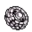 Massivon/Black |
해당 없음 | 해당 없음 | 해당 없음 | Fire Spirit (또는 Stiltmole) | River Spirit (데미지 높으면 Minichief Spirit) |
| Aurion/Yellow | 해당 없음 | 해당 없음 | 해당 없음 | 해당 없음 | Baby Troll (데미지 높으면 Samurai Guardian) |
Summoning 빌드
Arcane Cultist는 끝없는 소환(Summoning)을 진행하는 데 도움이 되는 여러 강력한 계정 전체 소환 버프를 가지고 있으며, Arcanist Form 진행에 중요한 레벨 400 탤런트에도 도달하는 데 도움이 됩니다. 이 클래스는 드랍률, AFK 비율, 다른 캐릭터의 클래스 경험치에 대한 맵별 버프와 함께 추가적인 No Bubble Left Behind 부스트에도 접근할 수 있습니다. 아래 탤런트들을 대안적인 채집/연구소 프리셋에 최대화하면 이러한 활동을 하거나 매일 소환 또는 일일 리셋 타이머 전에 이 프리셋으로 전환할 때 혜택을 극대화합니다.
| 탤런트 | 효과 | 설명 |
|---|---|---|
| Absolute Stardom | Gambit Cavern의 소환 배율 효과 증가 | 소환 정수(essence) 생성과 전투 잠재력을 높이는 주요 원천에 대한 대규모 부스트입니다. 이 탤런트는 World 5 구멍의 Gambit Cavern에 도달한 경우에만 유용하므로, 소환 배율을 잠금 해제하지 않았다면 건너뛰세요. |
| Essential Essence | 총 업그레이드 100개당 모든 소환 업그레이드 비용 감소 | 소환 업그레이드에서 도달 가능한 레벨의 잠재력을 높이는 탤런트로, 총 업그레이드 수와 함께 스케일링되어 항상 유용합니다. |
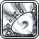 Passion of the Summon |
소환 경험치 증가 및 소환 패밀리어(Summoning Familiar) 이중 획득 확률 | 소환 경험치는 세 번째 Seraph 탭에 도달하면 Star Signs의 혜택을 높여줍니다. World 6의 소환 영역에 들어가기 전에(이 경험치를 청구할 때) 그리고 소환 패밀리어 업그레이드를 구매하기 전에 이 탤런트에 포인트를 투자하는 것이 상당한 부스트를 활용하는 것입니다. |
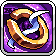 Tachyon Truth |
수집한 타키온 10의 거듭제곱당 No Bubble Left Behind가 추가 레벨을 줄 확률 | 이미 많은 No Bubble Left Behind 원천이 있지만, 이 게임 메커니즘에서 약간의 추가를 얻는 데 여전히 유용합니다. |
| Overwhelming Energy | 비전 몹을 처치하는 특정 맵에 추가 드랍률(보라), 경험치(노랑) 또는 AFK 획득(파랑) 부스트. 비전 크리스탈 색상을 전환하려면 탤런트를 재시전하세요. | 다른 캐릭터가 그 특정 맵에서 희귀 드랍이나 경험치를 파밍하고 있을 때 더 높은 월드에서 Arcanist Form에 도달한 후 영향을 미치는 탤런트입니다. |